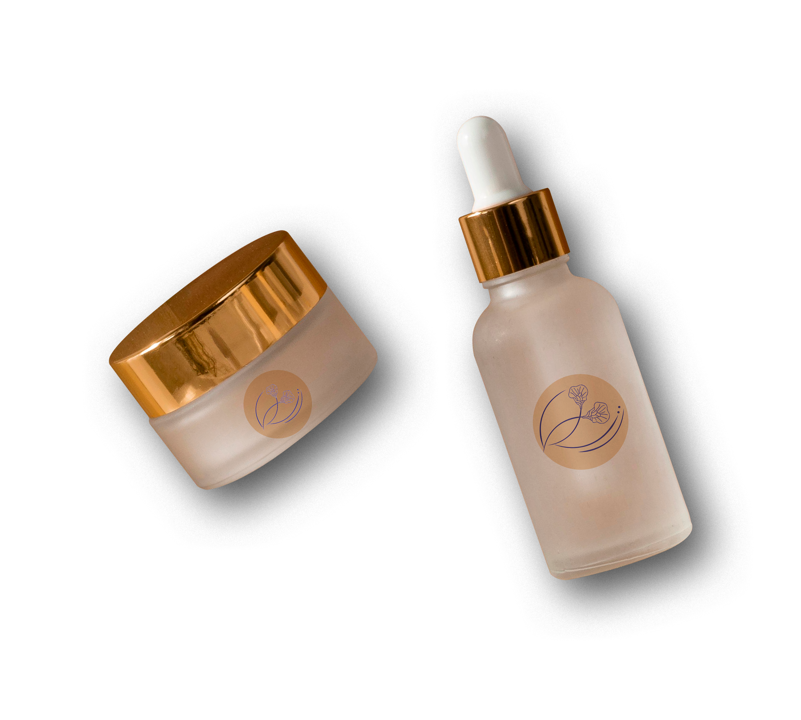

TeLung's Product

Cosmetics TeLung's
Kosmetik adalah salah satu produck yang bisa di buat dari bahan dasar ekstraksi bunga telung karena kandungan senyawa yang dapat membantu meremajakan kulit, memberikan kelembapan, dan mengurangi kerutan.

Beverages TeLung's
Beberapa manfaat daun telang tea adalah meningkatkan memori otak, mengurangi stres, meningkatkan suasana hati, membantu meningkatkan kesehatan mata, membantu meredakan asma, antioksidan.
Aromatherapy TeLung's
Sari bunga telang dapat diolah menjadi aromaterapi yang bermanfaat untuk kesehatan mental dan fisik. Aroma dari minyak essensial bunga telang dapat membantu mengatasi insomnia atau kurang tidur.